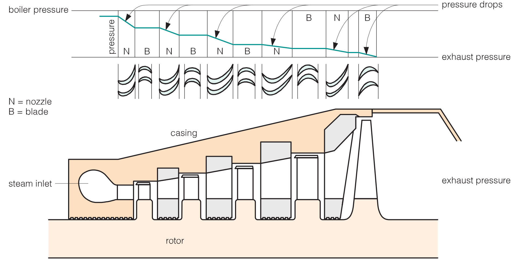

Steam turbines
Created Sunday 24 January 2016
Structure
A turbine contains a sequence of stages of nozzles (stators, or fixed blades) and their associated rotors (moving blades). Steam is admitted via a stop valve, which can trip to shut off the steam flow in emergency situations, then flows through control valves that allow the correct flow rate for the power output required (Adams et al., 2007).

Types
Impulse (action) turbines
- In impulse turbines, energy transfer comes from the action of steam hitting the blades. As the steam passes through each stage of nozzles, its velocity increases, its pressure drops, and the emerging high-velocity stream transfers its kinetic energy to the rotor while the steam losses velocity.
Reaction turbines
- In the reaction turbines, the pressure drop takes place over the rotor blades themselves. The rotor blades are shaped so that the transfer of energy to the rotor comes from the recoil as the steam escapes.
Non Condensing (Back-pressure) turbines
- The non-condensing turbines exhaust its entire flow of steam to the industrial process or facility at conditions close to the process heat requirements.
- Usually, the steam sent is not much above saturation temperature.
- the term "back-pressure" refers to turbines that exhaust steam at atmospheric pressures and above.
Condensing (extraction) turbines
- The condensing turbines exhaust directly to a condenser that maintain vacuum conditions at the discharge of the turbine. Are commonly used in power generation plants.
- One or more extraction points can exist for supplying steam to the process.
Stages
Because both the increase in volume and the drop in pressure are so great, separate turbines are mounted on the same axle . The high-pressure turbine (HP) exhaust at about 25% of the pressure at its inlet. The Intermediate turbine (IP) commonly drops the pressure to around 0.5-1 MPa before sending it to the low-pressure (LP). These exhaust at sub-atmospheric pressure to maximize the work done.